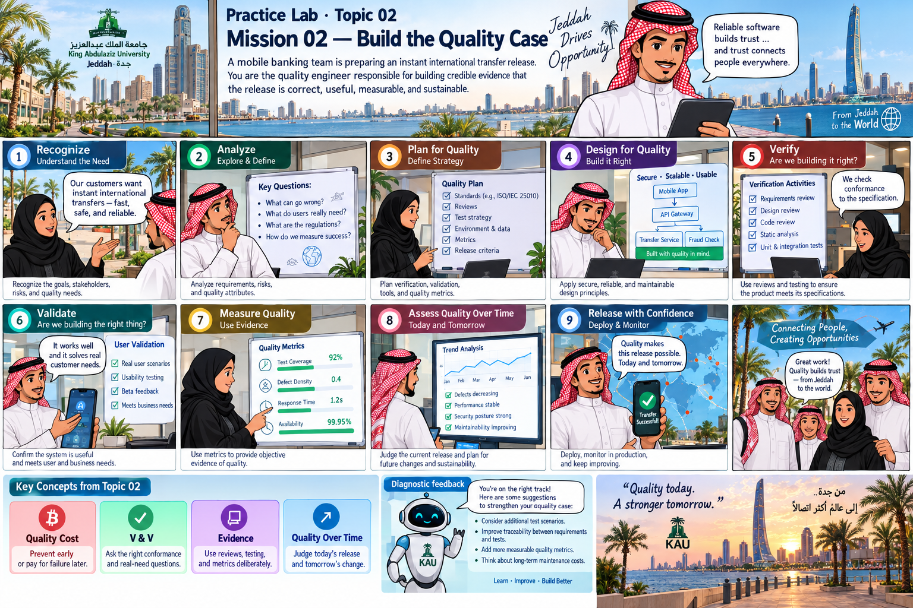

Practice Lab · Topic 02
A mobile banking team is preparing an instant international transfer release. You are the quality engineer responsible for building credible evidence that the release is correct, useful, measurable, and sustainable.
